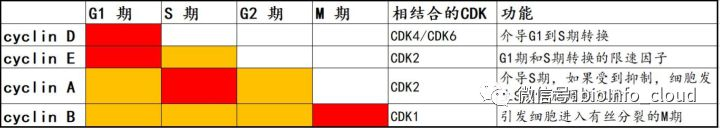

细胞周期¶
一.细胞周期概述¶
细胞周期（cell cycle）是指细胞从一次分裂完成开始到下一次分裂结束所经历的全过程。细胞周期是细胞生命活动的基本过程，细胞在周期时相的变迁过程中进入增殖、分化、衰老和死亡等生理状态。
体外研究发现，大多数细胞的细胞周期为 10 到 48 小时。主要分为 4 期：
G1 期——DNA 合成前期，是细胞周期的关键步骤。细胞周期长短决定于 G1 期长度；
S 期——DNA 合成期；
G2 期——DNA 合成后期；
M 期——有丝分裂期。M 期一结束，2 个子代细胞就形成了。这也标志着这一轮细胞周期的结束。
有些情况下，也会把细胞周期分为 5 期。在这种分类过程中，G1 期、S 期、G2 期和 M 期是相同的，但是会增加一个 G0 期。G0 期指的是某些细胞或某个阶段的细胞，可从 G1 期退出细胞周期，但是仍然存活。这类细胞受某种刺激后仍能进入细胞周期，继续进行 DNA 复制，并进行有丝分裂，这一时期被称为 G0 期。
在细胞周期的全过程中，还有两个检查点（check-point）。这两个检查点分别是 G1/S 期检查点和 G2/M 期检查点。1）G1/S 期检查点，控制着细胞从静止状态进入 DNA 合成期的调控；2）G2/M 检查点的作用是：决定细胞是否一分为二，形成两个子代细胞。如果通过 G2/M 检测点，细胞的染色体收缩，有丝分裂开始。这两个检查点能够监视细胞周期调控的运作，确保基因和遗传物质准确遗传到子代细胞中。细胞周期调控是在上述检查点控制下，通过各种调控因子的激活和灭活，使细胞依次启动和完成细胞周期循环的过程。
二.细胞周期过程中，参与调控的关键分子¶
保罗·诺斯用遗传学和分子学方法，识别克隆并描绘了细胞周期的一个关键调节物质 CDK（Cyclin-dependent kinase）。他发现 CDK 的功能在进化中被很好的保存了下来，CDK 是通过对其他蛋白质的化学修饰来驱动细胞周期的。蒂莫西·亨特的贡献是发现了细胞周期蛋白（Cyclin）——Cyclin 具有调节 CDK 的功能，Cyclin 和 CDK 相互配合能精准地调控细胞周期的全过程。他发现细胞周期蛋白 Cyclin 在每次细胞分裂中都周期性地降解，这个机制被证明对控制细胞周期的全过程都非常重要的作用。这两类重要的蛋白，再加上细胞周期蛋白依赖性激酶抑制因子（Cyclin dependent kinase inhibitor，CKI）。这三类蛋白共同构成了 Cyclin—CDK—CKI 的信号调控网络，从而实现了细胞周期全过程的精确调控。
1.细胞周期过程的概述¶
首先，生长因子与细胞表面的受体结合后，刺激细胞由 G0 期进入细胞周期过程，启动细胞内 fos、jun 和 myc 等 immediate early gene 表达。在这些 immediate early gene 作用下，细胞开始激活 CDK 和 G1 期 Cyclin 等分子。CDK 和 Cyclin 组装成有激酶活性的复合物，Cyclin/CDK 复合物能使 Rb 磷酸化，使转录因子 E2F 从磷酸化的 Rb 蛋白上脱落下来，游离的 E2F 可促使与 DNA 合成有关的一系列基因表达，从而促使 DNA 合成，推动细胞周期的进展。
pRb-E2F 是细胞 G1 和 S 期转换的一个经典调控途径。参与细胞周期内源性调控的核心因子是 Cyclin 和 CDK。其中，Cyclin 对于 CDK 的功能，起到的是正向促进的作用，而且 Cyclin 的周期性积累与降解对细胞周期的进程起着关键性的作用。CKI，这个分子的名字中有一个 inhibitor，对于 CDK 起到负向的抑制作用。CKI 能和 CDK 或 Cyclin 或 Cyclin-CDK 复合物结合，抑制 CDK 的催化活性。Cyclin 和 CKI 分别对 CDK 进行一正一反的调控。一旦这种正负调控的平衡被打破，细胞就可能发生异常增殖。
2.Cyclin 和 CDK 的介绍¶
在哺乳动物细胞，Cyclin 总共有 8 类，分别是 Cyclin A-H。其中 Cyclin D 有 D1、D2 和 D3 三种，Cyclin B 有 B1 和 B2 两种。所以 Cyclin 连同亚类，总共有 11 种亚类。Cyclin 含量随细胞周期时相的变化而变化，不同的 Cyclin 在不同的周期时相内开始表达，或者是达到含量和活性的峰值。而 CDK 在整个细胞周期中，表达相对恒定。所以在整个细胞周期的调控过程中，有明显周期性表达的 Cyclin 和表达相对稳定的不同的 CDK 相互结合形成复合物，从而激活 CDK 的激酶活性，达到在不同的时相精准调控细胞周期的功能。因为 Cyclin 要和 CDK 相互结合成复合物之后，才能发挥调控细胞周期的功能。
Cyclin 对细胞周期的调控，主要表现在 G1 期和 S 期/M 期。
（1）G1 期的 Cyclin 及相关 CDK¶
G1 期 Cyclin 在 G1 期和 G1/S 期交界处发挥重要的作用。G1/S 期和 G2/M 期恰好是两个非常重要的 check-point（检查点）。因此，Cyclin 是整个细胞周期过程中最核心的分子。Cyclin 的表达调控，不仅保证了细胞周期的精准性，同时也介导了检查点 check-point 功能。
G1 期 Cyclin 主要包括 Cyclin D1、D2、D3、E 和 C。
Cyclin D1 是发现最早也是研究最深入的 Cyclin。Cyclin D1 在 G1 早期表达，是细胞周期启动因子，它也是生长因子感应器。Cyclin D1 过表达使细胞加速从 G1 到 S 期转换，细胞快速通过 G1/S 检查点，S 期缩短；阻断或敲除 Cyclin D1，使细胞发生细胞周期阻滞，可以诱导细胞发生凋亡。Cyclin D 能和 CDK4 或 CDK6 结合，形成复合物（到底结合 CDK4 还是 CDK6，由细胞种类决定）。Cyclin D 与 CDK4/CDK6 结合后，能使 CDK4/6 的 172 位酪氨酸残基发生磷酸化，激活 CDK 的激酶活性。
Cyclin E 的合成开始于 G1 中期，表达水平最高是在细胞进入 S 期，同时 Cyclin E 的降解也发生在 S 期，而 Cyclin E 在 G2 和 M 期不表达。Cyclin E 主要在 G1 晚期发挥作用，是 G1 期和 S 期转换的限速因子。在 G1 期和 S 期，Cyclin E 能和 CDK2 形成复合物，能使 Rb 因磷酸化而失活，磷酸化的 RB 与 E2F 分离，失去对 E2F 转录活化功能的抑制，使细胞从 G1 期进入 S 期。
（2）S 期/M 期的 Cyclin 及相关 CDK¶
S 期的 Cyclin 主要是 Cyclin A，M 期 Cyclin 主要有 Cyclin B。它们分别在 S 期以及 G2 和 M 期交界处发挥作用，诱导细胞分裂。
A）S 期的 Cyclin 主要是 Cyclin A，在 G1 晚期开始增多，在 S 和 G2 期达到表达峰值，并能检测出激酶活性。如果细胞内 Cyclin A 表达受到抑制，细胞周期会停滞在 S 期。当细胞进入 S 期之后，由于 Cyclin E 的表达水平迅速降低，从而使 G1 期的 Cyclin E-CDK2 复合物解体。游离的 CDK2 又能和 S 期高表达的 Cyclin A 结合，从而形成 Cyclin A-CDK2 复合物。另外，也有报道，Cyclin A 也能与 CDK1 结合，并且在 G2 期达到活性峰值，随后迅速降解失活。不过，传统观点还是认为在 S 期，Cyclin A 主要和 CDK2 形成复合物，介导细胞通过 S 期。
B）M 期 Cyclin 主要有 Cyclin B，Cyclin B 在 G1 晚期开始合成，在 S 期表达升高，在 G2 晚期和 M 期表达达到峰值，并进入核内与 CDK1 结合形成复合物，从而激活 CDK1 的激酶活性。Cyclin B-CDK1 主要在 G2 末期发挥作用，可以引导细胞进入有丝分裂的 M 期。当细胞退出 M 期，Cyclin B 降解，CDK1 的激酶活性失活，底物去磷酸化，促进染色体的凝集，核膜核仁重建，引导细胞进入下一个细胞周期。
下图汇总了不同的 Cyclin 分子在细胞周期不同时相内的表达情况、所发挥的功能，以及能与它们相互结合的 CDK 等信息。

3.CKI 的结构与功能¶
目前已知的 CKI（Cyclin dependent kinase inhibitor）可划分为两大类：一类是 Ink4（Inhibitor of CDK4），特异性抑制 CDK4-Cyclin D1 或者 CDK6-Cyclin D1 的磷酸化激酶活性；另一类是 KIP（kinase inhibition protein），抑制大多数 CDK-Cyclin 的磷酸化激酶活性。
（1）Ink4 介绍¶
我们先介绍 Ink4，现已知的 Ink4 包括 p16（Ink4a/MTS1）、p15（Ink4b/MTS2）、p18（Ink4c）、p19（Ink4d）。
这里有两个问题需要大家注意：
问题一：这些基因都有很多个名称。例如 P16、p16INK4a、MTS1，指的都是同一个分子。而且这些分子在文献中都很常见，很难说哪个名称就比其他名称更普遍更被大家所接受。
问题二：分子不能弄混淆。比如我们在 NCBI 上查询 CDKN2A 这基因，网站上会告诉你，这个基因有很多的其他名称，例如 P16，p16INK4a，MTS1 等等，除此之外还有其他的别称，例如 p14，p14ARF 等。一般的读者看到这里，都会想当然地认为 p14 和 p16 只是同一个分子的两种名称而已。这就陷入了一种误区，其实 p14 和 p16 是两个完全不同的蛋白，发挥完全不同的功能。编码 p14 和 p16 蛋白的基因都位于染色体的 9p21 位置，编码 p14 的基因和编码 p16 的基因有共同的外显子 2 和 3，但是它们的外显子 1 是不同的。p14 是外显子 1β；而 p16 是外显子 1α。由于 p14 和 p16 的外显子 1 不同，而且发生了读码框的移位，导致 p14 和 p16 的蛋白序列也是不同的，所以 p14 和 p16 是完全不同的两个蛋白分子，序列不同，参与的信号通路也不同。p16 属于 CKI，参与 p16-Cyclin D1/CDK4 复合物到 Rb 的信号传递，也就是调控细胞周期的 Rb 途径；而 p14 参与 p14-MDM2-p53 信号通路的调控，通过解除 MDM2 介导的 p53 信号的抑制，使得 p53 表达升高，最终启动细胞周期的阻滞或凋亡。虽然从最终的效应来看，p14 和 p16 都能导致细胞周期的阻滞，但是它们所参与介导的信号通路是完全不同的。
Ink4 蛋白的 N 末端含有 4 个钩状重叠组成的二级结构，和 Cyclin D1 的序列有很高的同源性，因此 Ink4 能和 Cyclin D1 竞争性结合 CDK4 或者 CDK6，抑制 Cyclin D-CDK4/CDK6 的复合物，从而抑制了 Rb 的磷酸化作用，使得 E2F 与未磷酸化的 Rb 结合，阻断了 E2F 依赖的基因转录，最终实现抑制细胞周期进展的效果。Ink4 失活将导致细胞周期调控紊乱，目前已在多种肿瘤如胰腺癌、非小细胞肺癌、神经胶质细胞癌、急性白血病等中发现存在 p16Ink4a 基因缺失的现象。
（2）KIP 的介绍¶
KIP 全称是 kinase inhibition protein，激酶抑制蛋白。现已知的 KIP 包括 p21cip1（Cyclin inhibition protein 1）、p27kip1（kinase inhibition protein 1）及 p57kip2 三种细胞周期抑制蛋白。这三个 KIP 分子在 N 末端有结构及功能的相似性，都含有一个保守的 80 个氨基酸序列，能抑制 CDK4-Cyclin D1、CDK6-Cyclin D1、CDK2-CyclinE、CDK2-Cyclin A 的蛋白激酶复合物的活性。虽然三个 KIP 分子：p21、p27 和 p57，在 N 末端有序列上的相似性，但是它们 C 末端区域含有各不相同的功能区。p27kip1 C 末端有一个苏氨酸的磷酸化位点，可以抑制 H1 组蛋白的磷酸化；p21cip1 C 末端有 40 个氨基酸残基的肽段，可以和 DNA 聚合酶δ的辅助因子 PCNA 发生结合，从而覆盖了 PCNA 的某些功能区，使 PCNA 不能与 DNA 聚合酶δ形成复合物，从而影响 DNA 复制。
（3）小结¶
总结一下，CKI（细胞周期蛋白依赖性激酶抑制因子）可以分为两大类，一类是 Ink4，代表分子 p16、p15、p18 和 p19。Ink4 分子和 Cyclin 有结构上的相似性，可以通过竞争性结合的方式，阻断 Cyclin D 和 CDK4/CDK6 的复合物，从而阻断细胞周期；另一类是 KIP（激酶抑制蛋白），代表分子是 p21、p27 和 p57。KIP 分子也可以阻断 Cyclin 和 CDK 之间的复合物，在这一点的功能上，KIP 和 Ink4 类似，但是 KIP 分子的 C 末端差异很大，从而介导了不同 KIP 分子发挥不同的特异性功能。
三.细胞周期调控途径及机制¶
细胞周期的顺利进展需要 Cyclin、CDK、CKI 多因素之间相互协同作用。目前研究发现 Cyclin、CDK、CKI 对细胞周期的作用主要通过两条途径来实现，一条是 Rb 为主的网络调控途径；另一条是 p53 为主的调控途径。
1.以 Rb 为主的网络调控途径¶
- 生长因子结合相应的受体，通过信号传递，促进 Cyclin 基因表达；
- Cyclin 与相应 CDK 结合，形成 Cyclin-CDK 激酶复合物，促进 Rb 蛋白磷酸化；
- 非磷酸化的 Rb 原本和转录因子 E2F 相互结合。在发生磷酸化之后，Rb 释放核转录因子 E2F；
- 游离的 E2F 进入核内，结合一系列具特殊序列的基因启动子区，促进下游基因的表达；
- 这些基因的产物促进细胞进入细胞周期的程序。
2.以 p53 为主的调控机制¶
哺乳动物细胞在受到 DNA 损伤后，细胞周期的进程将会停滞于两个关键的检查点，即 G1/S 检查点和 G2/M 检查点。抑癌基因 p53 主要在 G1 检查点上发挥重要作用。p53 可作为转录因子，诱导下游蛋白的产生，从而达到调控细胞周期的作用。常见的机制有三种：
- p53 可诱导 p21 的表达。p21 基因启动子区域具有 p53 结合位点。p53 能与其结合并激活 p21 基因转录。当细胞 DNA 受损后，p21 基因在 p53 诱导下表达水平可升高，能抑制 CDK 活性，尤其是 Cyclin D-CDK4 复合物活性，阻止细胞从 G1 期进入 S 期，使细胞停止于 G1 期，从而有更多的时间修复 DNA 模板。如果 DNA 损伤严重无法修复，将导致细胞凋亡。
- p53 可诱导 GADD45 合成。GADD45 可以结合 PCNA，抑制 DNA 合成，从而抑制细胞进入 S 期。
- 诱导 Bax 产生。Bax 为凋亡相关基因，与 bcl-2 协同作用，共同调节细胞凋亡。在 p53 通路中，p53 可诱导产生 p21，而 p21 本身就是 CKI，在 Rb 调控机制中有重要作用。因此，Rb 调控通路与 p53 调控通路并不是完全独立分开的，而是在某些调节子之间存在着相互作用（crosstalk）。
四.细胞周期相关的实验检测¶
1.检测明星分子¶
看前面相关分子
2.PI 染色实验¶
检测细胞周期，除了上面提到的检测明星分子之外，更常用的细胞学检测方法是 PI 染色实验。简单介绍一下原理：在细胞周期的整个过程中，G0/G1 期发生于 DNA 复制之前，因此细胞内染色体表现为两倍体（2N）；而在 S 期，DNA 发生复制，因此 S 期的细胞染色体介于两倍体和四倍体之间（2N < 染色体 < 4N）；在 G2/M 期，由于 DNA 已经复制完成，因此细胞内染色体数量是四倍体（4N）。PI 全称是碘化丙啶。它是插入性核酸荧光染料，能选择性地嵌入核酸 DNA 双链螺旋的碱基之间并发出荧光。PI 结合的量与 DNA 的含量成正比例关系，用流式细胞仪进行分析就可以得到细胞周期各个阶段的 DNA 分布状态，从而计算出各个细胞周期时相的百分含量。
更新: 2023-09-04 10:08:44 原文: https://www.yuque.com/doublehelix/bioinfonotes/brnxv7